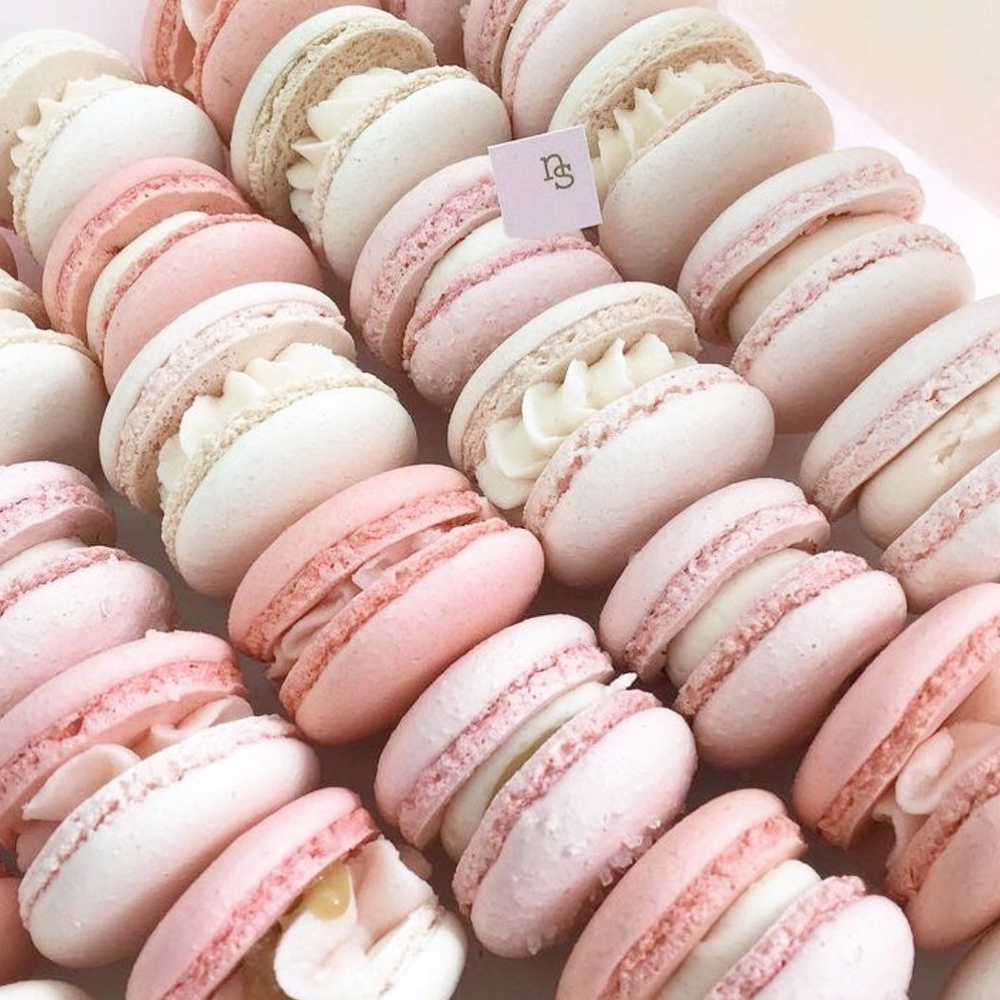
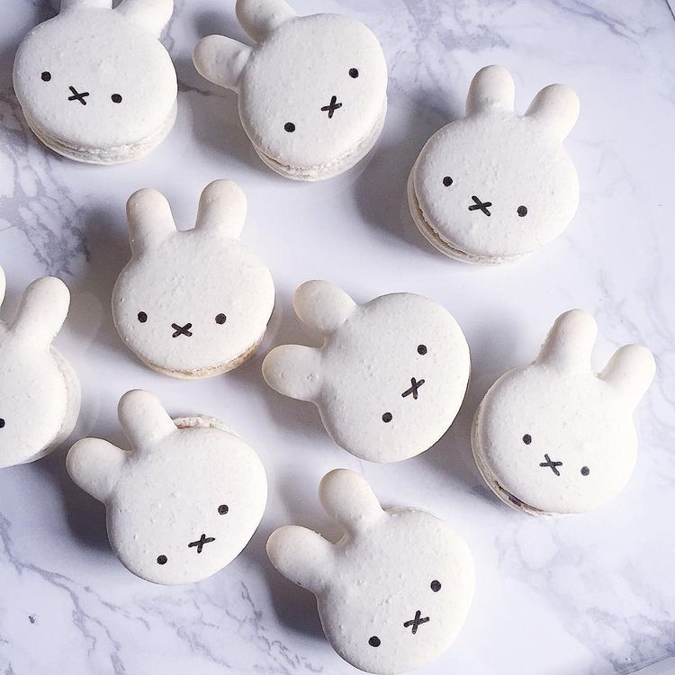
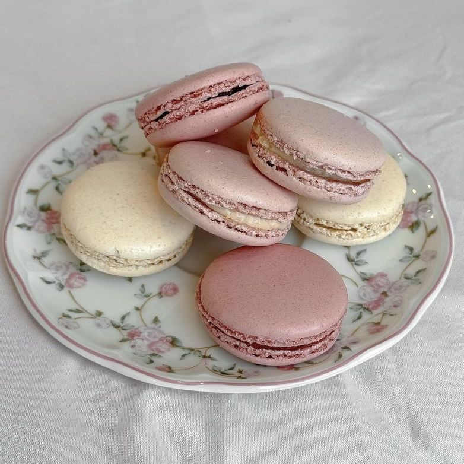
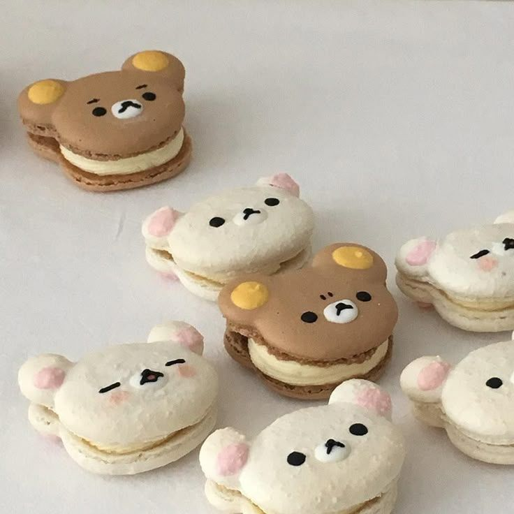
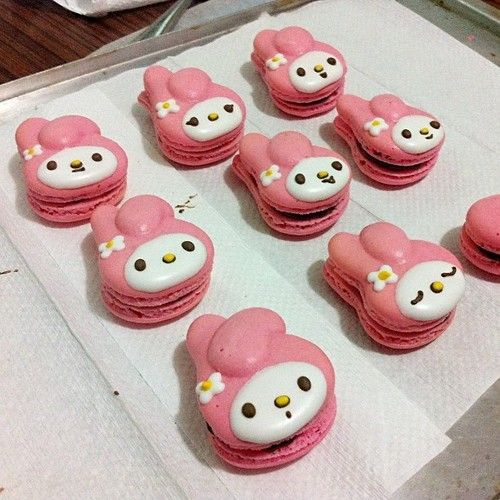

Ingrediënten
Voor de macaronschelpen ୧ ‧₊˚ 🍓 ⋅ ☆
- 100 g eiwit (ongeveer 3 middelgrote eieren), op kamertemperatuur
- 100 g kristalsuiker
- 100 g amandelmeel (fijn)
- 100 g poedersuiker
- optioneel: voedingskleurstof (gel)
Voor de vulling ˙ . ꒷ 🍰 . 𖦹˙—
- 100 g witte of pure chocolade
- 50 ml slagroom
- optioneel: smaakmakers (vanille, framboos, pistache, koffie, enz.)
Bereiden
1. Amandel-poedersuikermengsel
- Zeef amandelmeel en poedersuiker samen.
- Gooi grove stukjes weg; hoe fijner, hoe gladder de macarons worden.
2. Meringue maken
- Klop het eiwit schuimig.
- Voeg langzaam de kristalsuiker toe.
- Klop door tot je een stevige, glanzende meringue hebt.
- Voeg eventueel een paar druppels gelkleurstof toe.
3. Macaronage (de belangrijkste stap)
- Voeg het amandelmengsel toe aan de meringue.
- Meng met een spatel in vegende, ronde bewegingen.
- Stop zodra het beslag langzaam van de spatel afloopt als een “lava-lint”. Als het te dik is → nog een paar keer vouwen. Als het te dun is → niet meer mixen (dan worden de macarons plat).
4. Spuiten
- Doe het beslag in een spuitzak.
- Spuit gelijke rondjes van ongeveer 3–3,5 cm op de bakplaat.
- Tik de bakplaat stevig tegen het aanrecht om luchtbellen te verwijderen.
5. Drogen
Laat de macarons 30–60 minuten aan de lucht drogen tot de bovenkant niet meer plakt. Dit zorgt voor de bekende “voetjes” tijdens het bakken.
6. Bakken
- Verwarm de oven voor op 150°C (boven/onderwarmte).
- Bak 12–14 minuten.
- De macarons zijn klaar als de schelpen stevig aanvoelen en niet wiebelen op de “voetjes”.
- Laat ze volledig afkoelen.
7. Vulling maken
- Verwarm de slagroom.
- Giet over de chocolade (in stukjes).
- Roer tot een gladde ganache.
- Laat opstijven tot spuitbare dikte.
8. Macarons vullen
- Match gelijke schelpen met elkaar.
- Spuit wat ganache op één helfte.
- Druk de andere helft er zachtjes op.
Rusttijd
Laat de gevulde macarons 24 uur rusten in de koelkast voor de beste textuur. Serveer op kamertemperatuur.

